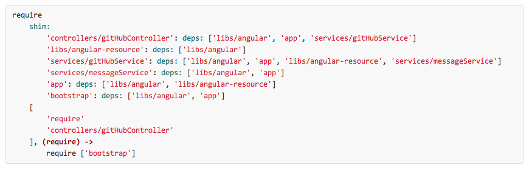

The Developer's Workflow
Building Large AngularJS Web Apps
By Cary Landholt
Twitter @CaryLandholt
YouTube CaryLandholt
GitHub CaryLandholt
Principles
Whatever they are, ya gotta agree on 'em
Start here
Principle
Editors Choice


And the winner is

Developer Autonomy
I don't want to wait for your API

// fake it with Node.js and Express (or something similar)
app.get('/people', function(req, res) {
return [
{id: 0, name: 'Cary'},
{id: 1, name: 'Saasha'},
{id: 2, name: 'Planet'}
];
});
// let's access from Angular
// regardless of the backend server, use the same api
var People,
people;
People = $resource('/people'); /* this is the api signature */
people = People.query();
Principle
IE
Most of us cannot stand it, but few of us can ignore it
<mywidget></mywidget>
// but if you include the following JavaScript snippet
// before the new element is introduced,
// IE will render it
document.createElement('mywidget');
But who wants to do that for every element directive?
<html xmlns:ng="http://angularjs.org" xmlns:app="ignored">
<app:mywidget></app:mywidget>
<app:input></app:input>
Principle
Minimum Distribution
The dist directory must contain only
the minimum files for the application
dist
|____images
| |____glyphicons-halflings-white.png
| |____glyphicons-halflings.png
|____index.html
|____scripts
| |____libs
| | |____html5shiv-printshiv.js
| | |____json2.js
| |____scripts.min.js
|____styles
| |____framework.css
| | # framework.css was included in styles.min.css
| | # and should not be included in the final output directory
| |____styles.min.css
Principle
Everything Minifiable
// DO NOT
// myController.js
angular.module('app').controller('myController', function ($scope) {
$scope.name = 'Angular';
});
Check it in Google Closure Compiler
// variable replacement will rename $scope
// myController.js
angular.module('app').controller('myController', function (a) {
/* Angular most likely will not find 'a' in its dependency management system */
a.name = 'Angular';
});
// DO use dependency array syntax
// myController.js
angular.module('app').controller('myController', ['$scope', function ($scope) {
$scope.name = 'Angular';
}]);
Principle
Minify Everything
CSS
JS
HTML
Principle
Debuggable
This is gonna hurt
Better

Principle
One module per file
// myController.js
angular.module('app').controller('myController', ['$scope', function ($scope) {
// code here
}]);
// myDirective.js
angular.module('app').directive('myDirective', [function () {
// code here
}]);
// myService.js
angular.module('app').service('myService', [function () {
// code here
}]);
Principle
Inject Everything
// DO NOT
// myDirective.js
angular.module('app').directive('myDirective', [function () {
$('#myModal').modal(); /* jQuery wasn't injected */
}]);
// DO
// jquery.js
angular.module('app').factory('$', ['$window', function ($window) {
return $window.$;
}]);
// myDirective.js
angular.module('app').directive('myDirective', ['$', function ($) {
$('#myModal').modal();
}]);
Principle
No Globals
// DO NOT
// myController.js
function myController ($scope) { /* myController is global */
// code here
}
// DO NOT
// app.js
var app = angular.module('app', []); /* app is global */
// myController.js
app.controller('myController', ['$scope', function ($scope) {
// code here
}]);
// DO
// app.js
angular.module('app', []);
// myController.js
angular.module('app').controller('myController', ['$scope', function ($scope) {
// code here
}]);
Files
and files, and files, and ...
<script src="/scripts/libs/angular.js"></script>
<script src="/scripts/libs/angular-resource.js"></script>
<script src="/scripts/app.js"></script>
<script src="/scripts/services/messageService.js"></script>
<script src="/scripts/services/gitHubService.js"></script>
<script src="/scripts/controllers/gitHubController.js"></script>
<script src="/scripts/bootstrap.js"></script>
Use a dependency loader

Dependency Management
Dependency Loading and Dependency Handle
Coupled
Decoupled
Build It
grunt
grunt dev
grunt prod
grunt test
grunt server
LiveReload
Do it for me
No more leaving the editor, making the browser active, and hitting F5